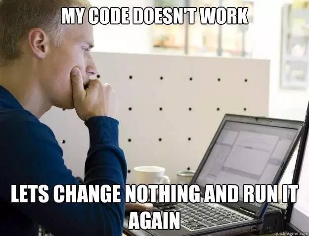

これらのコーディングの達人だけが知る秘術を、今日こそお前に伝授する……
1、真面目にでたらめを言う術
プロダクトマネージャーと要件で対峙する際、実装が難しい／実装したくない機能を、真面目な顔でオカルトなどを通して口述し、プロダクトマネージャーをその場で呆然とさせ、難しいと知って引き下がらせる。

2、デバッグ術三段
第一段：総当たり法デバッグ術
問題を見つけられない場合、関連するコードを一行ずつコメントアウトして、問題の箇所が見つかるまで試す。
第二段：「総当たり法デバッグ術」の上級版：二分法デバッグ術
表現は「二分探索デバッグ術」に似ている。問題が見つからない場合、関連するコードの半分を削除してコンパイル・実行する。それでも問題が存在するなら、さらに半分を削除してコンパイル・実行する。この方法は理論上 O(logn) の時間がかかる（n はコード行数）。伝説によれば総当たり法より少し速い。
第三段：本番デバッグ術
前二つの方法がうまくいかず、この変更で正しいかも分からないなら、まず本番にリリースして試す…。うまくいかなければすぐロールバック！
3、「1111111111」術
4、説明するのが面倒くさい術
プログラマーが自分がやったことを説明するのが面倒なときは、たいてい「アルゴリズム」という言葉でコードをまとめてしまう。

5、一切忘却術
3ヶ月前に自分が書いたコードを見て、当時なぜそう書いたのか完全に忘れている。
6、みんなバカだ術
プロダクトマネージャーはバカ、QAはバカ
ユーザーはバカ、このコードを書いたやつはバカ
ちょっと待て…
どうやら自分が書いたみたいだ…
7、製品開光術
もうすぐリリースする製品のために、大師に開光の儀式を行ってもらい、安定稼働と財源滾滾（お金がどんどん湧くこと）を祈願する。例えば次のように：
またはこう
さらにこう
8、コード開光術
各ファイルの先頭に仏像を置き、仏の加護とバグが永遠にないことを祈る。例えば：
9、運任せデバッグ術
適当に変更したら、なぜか正しく動いているようだ。理由は分からない。具体的な表現は：

10、不信邪デバッグ術
具体的な表現は：

11、ペアプログラミング術
心が通じ合った二人のプログラマーが、両手を重ねてキーボードに置き、前後の姿勢でプログラミングを行う。専門用語は：spooning（スプーニング／勺子（スプーン））
12、大技を溜める術
要件を受けた後、無反応で、微信（WeChat）をチャットし、微博（Weibo）を巡回し、A/Bステーション（AcFun/Bilibili）を見始めることを指す。締め切りが近づいてから実装を始め、1週間分の作業量を1日または数時間で終わらせる。
13、マインドコントロール術
メカニカルキーボードでパチパチとコードを叩き、隣の席のプログラマーをイライラさせ、効率を低下させ、残業続きで睡眠不足にし、最終的に精神崩壊に追い込む。

14、スタックオーバーフロー術
あらゆる問題に遭遇したとき、次を使うことを指す。Stackoverflow.com答えを探しに来る。この術を上手く使えば、プログラミングの効率は倍増する。
15、玄学術
昨日の退勤前まで正常に動いていたコード、何も変えていないのに、今実行すると動かない！
毎日スパイスをプラス
同僚が飼っているカメ